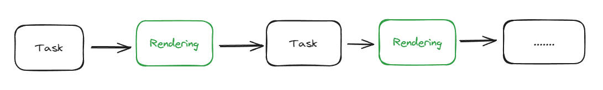
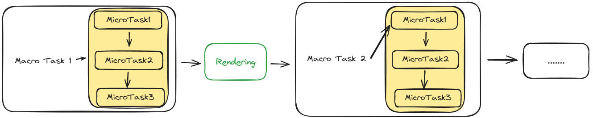

作为一名 web 开发者，肯定遇到过页面卡死的问题，但是你知道它为什么会发生呢？并且我们如何解决这个问题呢？这很关键。
解决这个问题前，首先要理解 Event Loop 是如何工作的。
Event Loop 就是一个无止境的循环。Js 引擎内部维护了一个任务队列（macro task queue），它们遵循 first-come-first-served 的原则，Js 引擎会优先执行先进入任务队列的任务，每次执行完一个任务，会检查任务队列中还有没有其他任务，如果有则继续执行下一个任务，否则 Js 引擎会等待新的任务进入任务队列。
在两次执行任务的中间，浏览器会触发一次 render，即页面 render 的过程是发生在任务执行完成之后。所以如果一次任务的执行时间过长，浏览器没法处理其他任务，例如处理 UI 事件，浏览器就会弹出 alert ” Page Unresponsive“。

总结：
加载 script、使用 setTimeout 添加定时任务、触发 mouse event 等都可以向任务队列中插入一个任务。
所以下面的代码输出顺序并不是 "step1 -> step2 -> step3"，而是 "step1 -> step3 -> step2"。
console.log("step1");
setTimeout(() => {
console.log("step2");
}, 0);
console.log("step3");
setTimeout 虽然设置定时为 0，但是并不是立即执行的，它表示在 0s 后将任务注册到任务队列中，而 js 引擎会在当前任务执行完成后，再检查任务队列是否有未执行的任务，所以输出顺序为 "step1 -> step3 -> step2"。
页面未响应的原因就是一次执行任务的时间过长导致的，所以如何解决呢？
例如语法高亮任务就是一个非常耗时占用 cpu 高的任务。当 js 引擎忙于处理语法高亮时，它没空处理与 Dom 相关的工作以及用户事件，导致页面卡死。
请你暂停思考下，我们如何解决这个问题呢？
（.......）
既然一次任务执行时间过长，我们能否将任务拆分成多个小任务执行呢？答案是肯定的。我将用一个例子来演示这个过程。
let i = 0;
let start = Date.now();
function count() {
for (let j = 0; j < 1e9; j++) {
i++;
}
alert("Done in " + (Date.now() - start) + 'ms');
}
count();
这段代码使用循环模拟了一个较长的任务，它会占用 js 引擎较长的时间，在循环执行过程中，你无法点击页面按钮或者滚动页面，因为 Rendering 永远在 task 执行完成后发生。
通过 setTimeout 将任务拆分，每个子任务单独作为一次任务的执行。
let i = 0;
let start = Date.now();
function count() {
do {
i++;
} while (i % 1e6 != 0);
if (i == 1e9) {
alert("Done in " + (Date.now() - start) + 'ms');
} else {
setTimeout(count);
}
}
count();
第二个版本的代码，通过拆分后，执行时，页面并不会出现卡死的现象，成功解决了页面未响应的问题。
但是能否将任务执行的速度提高一点呢，虽然设置了定时 0，将任务插进任务队列，但是浏览器并不会立即执行，这里有一个知识点就是，浏览器在处理两轮 setTimeout 中最小延迟为 4ms，也就是用 setTimeout 立即添加了一个任务，最快也需要 4ms 才能执行，所以提前将任务插进任务队列，任务执行的速度会越快。
let i = 0;
let start = Date.now();
function count() {
if (i < 1e9 - 1e6) {
// 将 setTimeout 提前，将任务提前放到任务队列中
setTimeout(count);
}
do {
i++;
} while (i % 1e6 != 0);
if (i == 1e9) {
alert("Done in " + (Date.now() - start) + 'ms');
}
}
count();
你可以自己测试下第三个版本与第二个版本的速度。
上文中提到的任务就是宏任务（macro task），js 引擎除了维护一个宏任务队列，还维护了一个微任务队列（micro task queue），在每个宏任务执行完成后，会检查微任务队列，当所有微任务执行完成后，浏览器会进行 rendering，最后进入下一个宏任务的执行。即每个宏任务执行过程中包含了微任务。微任务队列也是遵循先到先服务的原则。

通过 promise.then, promise.catch, promise.finally，async...await 可以在当前宏任务执行过程中插入一个微任务。例如下面的代码输出 ”code -> promise -> timeout“。
setTimeout(() => console.log("timeout"));
Promise.resolve()
.then(() => console.log("promise"));
console.log("code");
当我们希望异步执行一个方法，但是希望这个方法在 render 或者新的事件处理之前执行，可以通过 queueMicrotask 将这个方法排进当前宏任务的微任务队列中等待执行。
另外一点需要注意的是 定义 promise 传的方法属于同步代码，即当前宏任务，下面的代码输出 "step1 -> step2 -> step3 -> step4"。
console.log("step1");
new Promise((res, rej) => {
console.log("step2");
res();
}).then(() => {
console.log("step4");
});
console.log("step3")
async 方法中，await 语句前的代码也属于当前宏任务的代码，后面的代码属于当前宏任务中的微任务中的代码。
console.log("step1");
async function test() {
console.log("step2");
await Promise.resolve().then(() => {
console.log("step4");
});
console.log("step5");
}
test();
console.log("step3");
上述代码输出 "step1 -> step2 -> step3 -> step4 -> step5"。
（完）